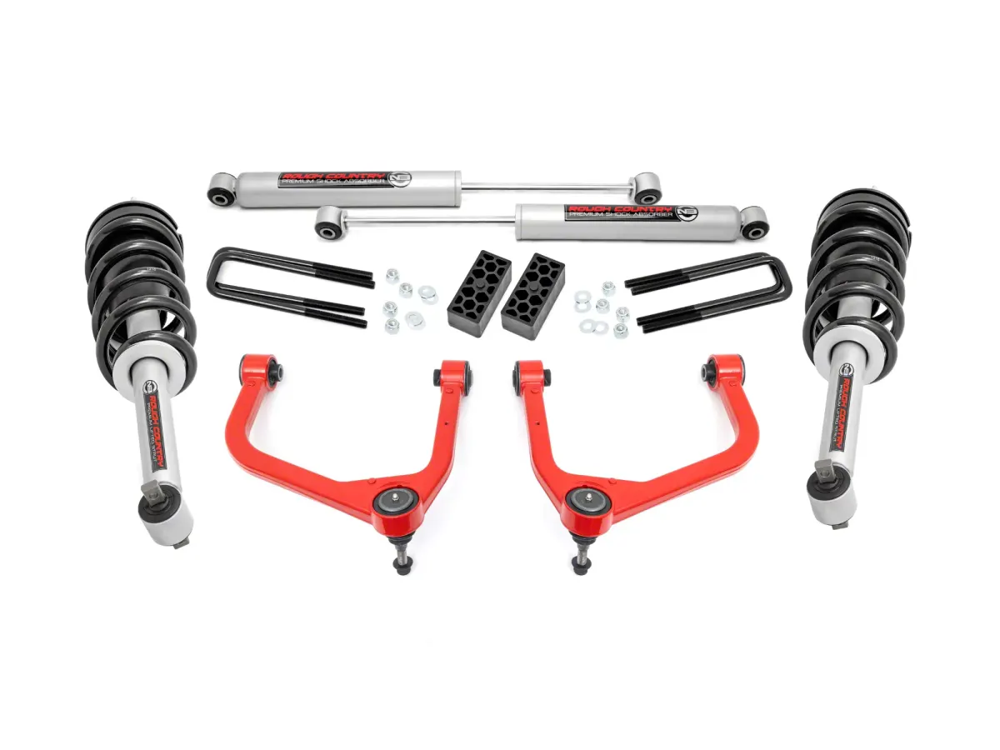
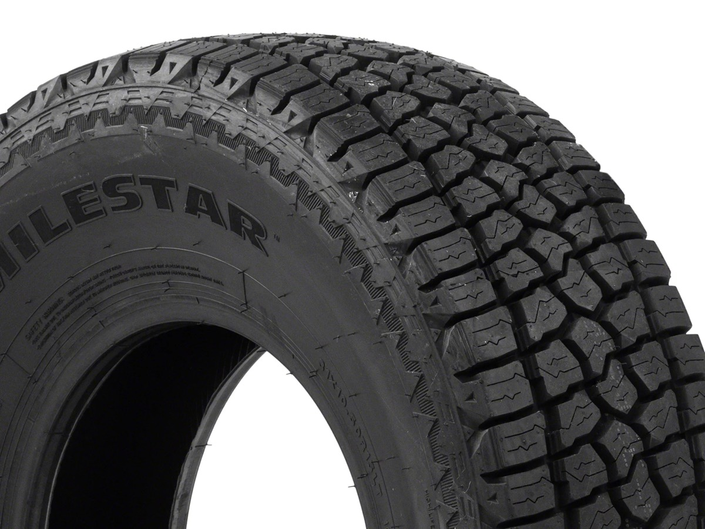
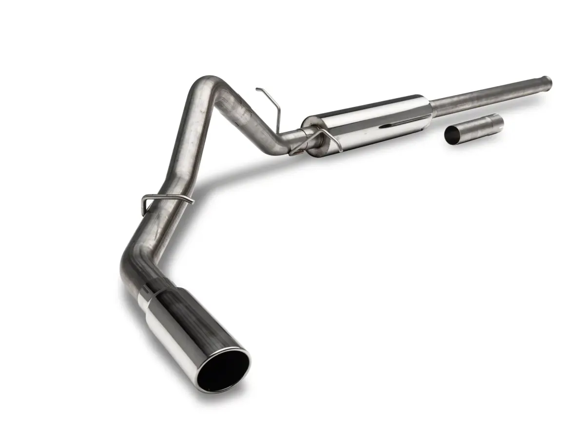
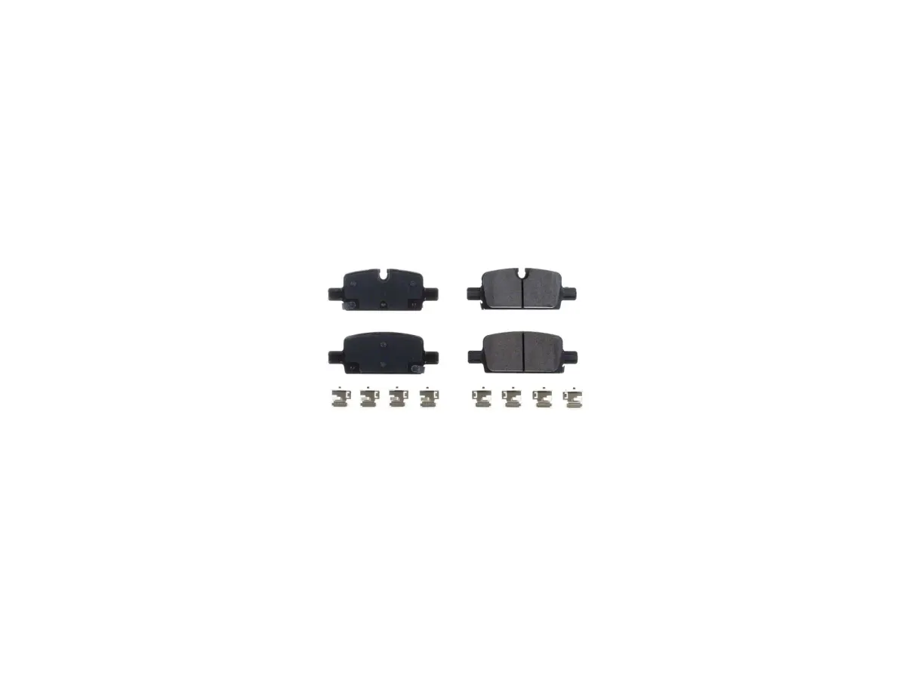
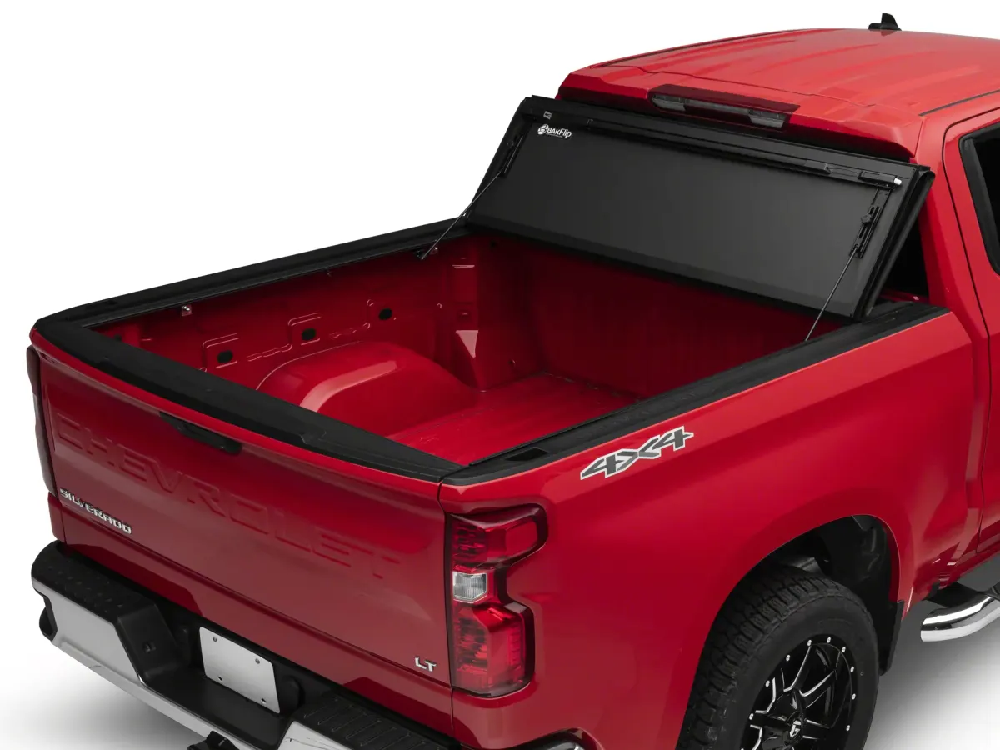
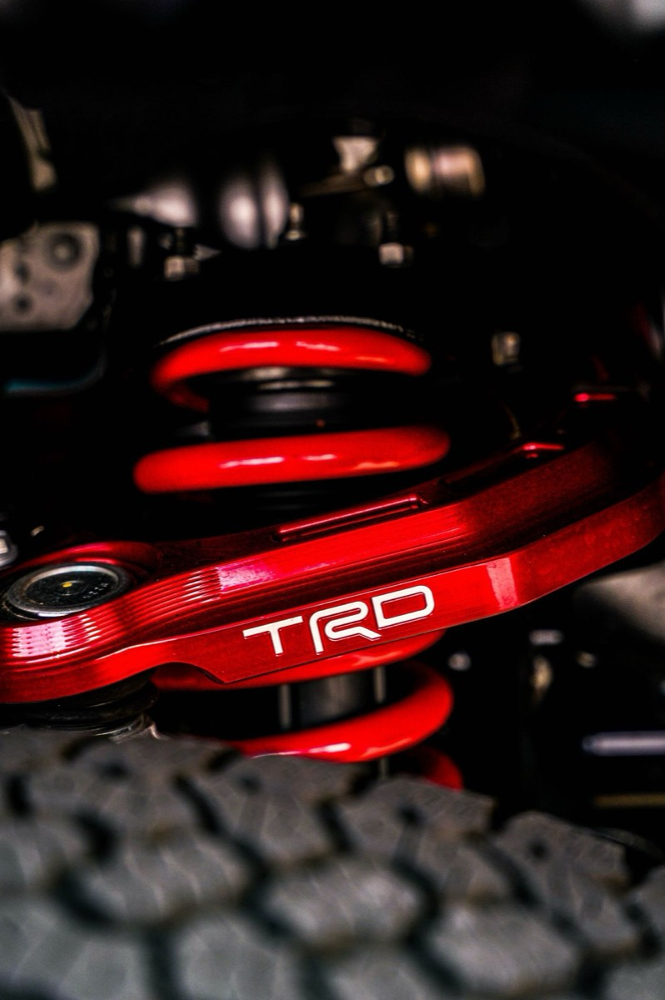
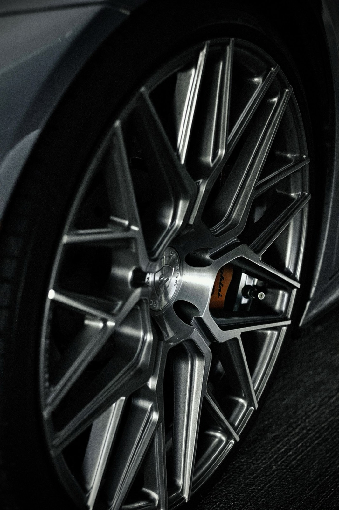
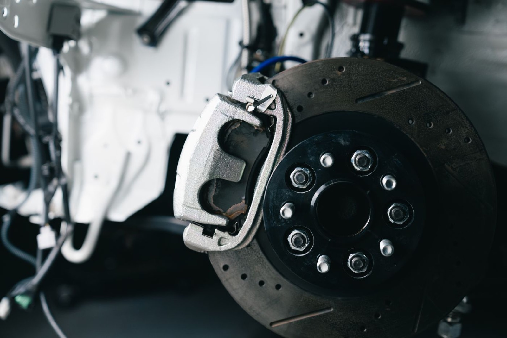
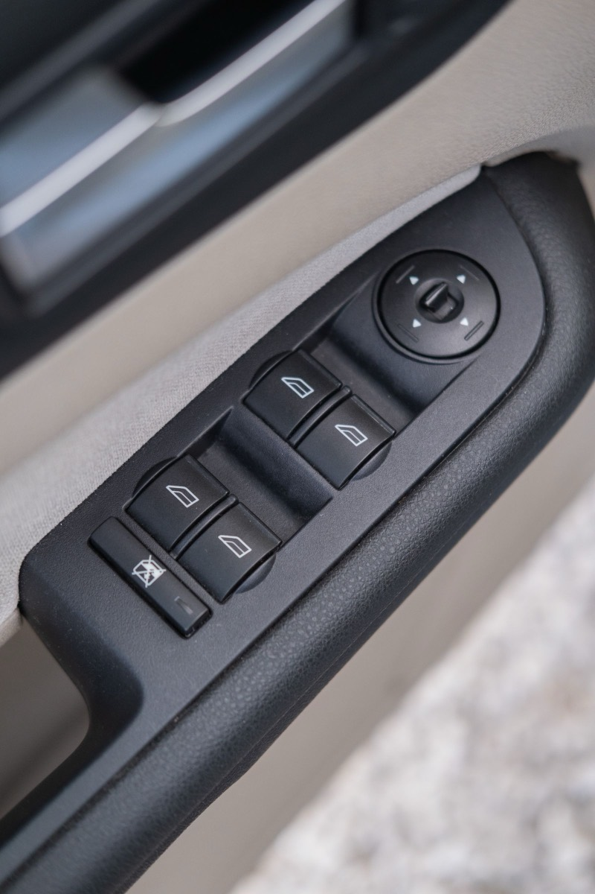
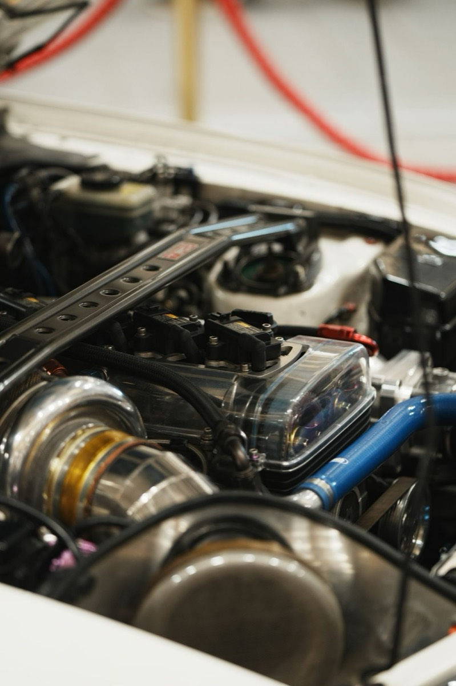

CarModReview
Published specs. Named sources. No invented numbers.
Parts coverage for people who want to know what a product actually is before they buy it.
Latest guide
Offset and Backspacing: One Number Describes the Other
Backspacing equals half the width plus one inch, plus offset divided by 25.4. Verified against five wheels from 6.5 to 9 inches wide. Use it to catch a listing that contradicts itself.
Parts in these guides
Every photograph below is the listing’s own product shot, matched to the exact part the guide recommends.

Rough Country 3.50-Inch Forged UCA Lift Kit with N3 Struts and Premium N3 Shocks, RedSuspension
Milestar Patagonia A/T RWheels & Tires Range DFM ModuleEngine & Intake
Range DFM ModuleEngine & Intake
C&L Single Exhaust System with Polished Tip, Side ExitExhaust
PowerStop Z17 Evolution Ceramic Pads with Hardware, Rear PairBrakes
BAK Industries BAKFlip MX4 Folding Tonneau CoverTonneau & Bed- AutoLoc One Touch window module, AUL-9862Electrical
How these guides are put together
Each guide starts from published sources, not impressions. We read manufacturer documentation — fitment charts, torque specs, warranty language — and put the numbers side by side, naming where each figure came from.
Nothing here is presented as a dyno result or a measured figure unless the source is cited on the page. Where a claim cannot be verified from a primary source, the guide says so rather than repeating it as fact. Most parts content repeats manufacturer marketing as though it were independent testing; that is the difference worth paying attention to.
What you’ll find
Fitment and buying guides — offset, load rating, spring rate, pad compound, exhaust diameter. The numbers that decide whether a part works, explained without the marketing layer.
Install reality — what the documentation does not tell you: seized hardware, steps that assume a lift, torque values that differ between the manual and the forum. The part that determines whether a job takes an afternoon or a weekend.
Spec comparisons — published figures side by side, with the source named on the page.
Categories
| Wheels & Tires | Offset, load range, tire sizing, 4x4 diameter matching |
| Suspension | Leveling, lifting, springs vs coilovers, geometry correction |
| Engine & Intake | Cold air, filtration, MAF care, real vs claimed gains |
| Exhaust | Cat-back vs axle-back, drone, materials, legality |
| Brakes | Pad compounds, rotor choices, fluid, bedding |
| Electrical | Power windows, locks, lighting, 12V |
| Tuning | Flash vs piggyback, warranty reality, data logging |
Categories
Suspension

- Alignment After a Lift Kit: Every Kit Is Priced Per Wheel
- Two 3.5-Inch Lift Kits, $230 Apart: What the M1 Shocks Actually Buy
- A 1.5-Inch Spacer or 1.75 Inches With Control Arms? What Each One Actually Changes
- Leveling Kits: What They Change, What They Cost, What You Give Up
- Suspension Upgrades: Springs, Coilovers, and Why Cheap Kits Ruin Cars
Wheels & Tires

- Offset and Backspacing: One Number Describes the Other
- Load Range E Does Not Mean Ten Plies, and the Listings Prove It
- Wheel Spacers: Thickness Does Not Predict Price, and Bore Decides Fit
- Tires for a Mostly-Street 4x4: Load Range, Size, and the E-Rated Trap
- Aftermarket Wheels: Offset, Width, and the Numbers That Decide Fitment
Engine & Intake
- Transmission Shudder: Misfire, Fluid, or Converter?
- 3.0L Duramax Service: The Oil Is a Licence, the Filter Is a Part Number
- Golf GTI: MK7 vs MK8 vs MK8.5, Generation by Generation
- GM's Lifter Problem: Which Trucks It Hits and What the Bulletins Say
- Cold Air Intake Sound: What Actually Changes, and Where You Hear It
- AFM and DFM Disablers: Which Ones Are Actually CARB Legal
- A New Diesel Oil Category Lands in 2027. Here's Which One Your Truck Needs.
- Is a Cold Air Intake CARB-Legal in California? Four Listings, One Answer
- The Install Time on the Listing Is Not the Install Time
- What Truck Owners Actually Complain About (91 Low Reviews, Read)
- Cold Air Intake on a Turbo Four: Noise, Power, or Neither?
- Intake Options From $55 to $476: What You Get at Each Price
- Cold Air Intake: What It Does, What It Doesn't, and the MAF Problem
Exhaust
- WRX Downpipe Before Cat-Back: The Order That Works, and the Part That Got Pulled
- Exhaust Manifold Leak: Why It Ticks Cold and Goes Quiet Hot
- Muffler Delete vs Straight Pipe: What Each Actually Does
- Golf GTI Cat-Back Exhaust: What the Options Cost and Which to Pick
- Exhaust Flapper Valve: What It Does and How to Stop the Rattle
- Honda Accord 2.0T Exhaust and Tune: The Order That Actually Works
- Exhaust Systems Explained: Cat-Back vs Axle-Back, Sound vs Drone, and Legal Reality
Brakes

- Big Brake Kits: The Wheel Diameter Field Decides Before the Price
- The Stuck Brake Rotor: What Actually Frees It, and What the Bolt Costs
- Resurface or Replace a Rotor: The Discard Thickness Number Decides
- Brake Fluid: The Wet Boiling Point Is the Only Number That Matters
- Brake Pads and Rotors: The Upgrade That Makes You Faster
Tonneau & Bed
- Tonneau Cover Spec Rows: What "Full Bed Access: No" Really Means
- A Bed Rack and a Tonneau Cover: What Decides Whether They Fit Together
- Do Tonneau Covers Improve MPG? Three Tests, Three Answers
- Tonneau Covers: What $190 Buys and What $1,500 Buys
Electrical

- LED Headlights: The Street Legal Field Is Published, the Lumens Are Not
- Bentley Will Sell You a Better Screen. It Costs Almost Every Button.
- Audi Says It Went Too Far on Screens. The Rollers Are the Tell.
- MCEqual Puts a Real Equalizer Back in GM's Google-Built Infotainment
- Why Only One Window Goes Up By Itself, and What You Can Do
Tuning

Also published
By vehicle
- Pickup Trucks42 guides
- SUVs16 guides
- Sports Cars3 guides
- Sedans4 guides
- Luxury Vehicles2 guides